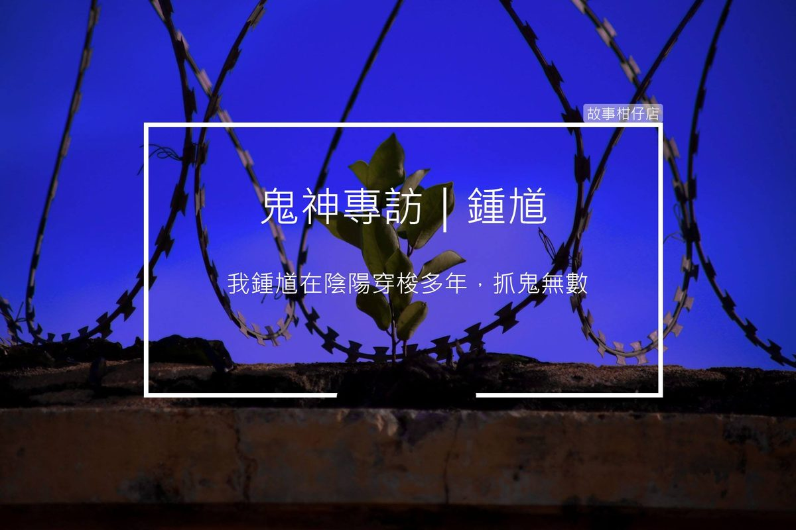

鐵漢柔情──專訪反恐隊長鍾馗/鬼神專訪

鐵漢柔情──專訪反恐隊長鍾馗
採訪人物：鍾馗
採訪人：老闆
採訪時間：民國107年，農曆7月1日
採訪地點：基隆廟口
故事回顧：鬼卒採訪
老闆：(拍前面香腸攤前某位高大男子)
鍾馗大哥祢好，祢也喜歡吃烤香腸？
鍾馗：你怎知道我是誰？
老闆： 大哥長的如此出位，我又怎會認不出呢，而且今日正好開鬼門，我想鍾馗大哥應該會在這附近坐鎮，便來碰碰運氣。
鍾馗：相逢便是有緣，來來來，小蝠也給他來上一串，你吃辣吧，辣粉給他灑多點啊，還有那個小印去拿罐啤酒來給他解解渴。
老闆：(從某兩位年輕男子手上接過香腸、啤酒)
人人都說鍾馗交遊廣闊、做事海派，今天見識到了，其實我是想跟鍾馗大哥做個簡單的採訪，請大哥幫忙。
鍾馗：沒個問題！剛處理完鬼門，現在正是休息時間，我們到小攤聊。
小鬼們麻煩幫我盯個場，我跟這位兄弟去聊聊天。
五鬼：YES SIR！
(轉身繼續吃香腸)
老闆：那麼我就先開口問了，想請問鍾馗大哥的來歷？
鍾馗：我啊，世人的說法是我本為唐進士，中舉後因為相貌醜陋，被皇帝所嫌，憤而自刎死去，皇帝為平天下人心，才封了我個驅魔真君，打發打發我；又有人說我因為出現在唐玄宗夢裡驅鬼，這才曝了光，但這些都不是真的。
你看我這臉豹頭彪面，鷹鼻大口、寬額鳳眼，這也是假的。
(鍾馗剝下臉皮面具)
老闆：鍾馗大哥實相竟如此秀氣潔白！
鍾馗：哈哈哈，別驚訝，熟人皆知我本來模樣。我本上古伏魔法器「終葵」，因為長年跟著各方巫師四處驅鬼降魔，又吸收了陰陽靈力，進而化為人形繼續降妖。而終葵法器多為玉製，所以我相貌本就白皙透明，只是為了抓鬼方便，才拿了以前儺戲驅邪的醜惡面具戴，加點威嚴，有時惡鬼看見，便嚇得直接投降，方便得很。
來來來，我再幫你斟上一杯。
老闆：滿了滿了。原來如此，那麼剛剛大哥身邊的那些年輕人是？
鍾馗：那些個小鬼啊，換了很多屆了，還記得第一屆是我親自降伏的惡鬼收編來的，現在都是經過地府精心考核挑選的鬼卒來擔任，一開始來都長官長官地叫，令我相當不習慣，工作就已經這麼緊張了，平時就放鬆點，還好久了大家也就像兄弟一樣了。
老闆： 那麼大哥跟地府之間的關係是？
鍾馗：我有點像地府的反恐部隊，不過主要業務範圍在陽間，只要有跟亡魂冤鬼、惡妖邪魔相關的事件，上面通報下來，不，應該說下面通報上來，都是我跟小鬼們去處理，千萬別小看了那些屌兒啷噹的小鬼，徒手搏擊、咒術施放、各式武器皆精通，有時我都站後面搧扇子看表演就好。
老闆：那在多年的抓鬼生涯中，有沒有甚麼印象深刻的事呢？
鍾馗：印象深啊，我只能說我最不喜歡抓的類型，就是母子鬼。
母子鬼通常因為連結深，所以他們發揮出來的力量也很大，真要作祟起來，比吊死鬼還驚人。而作祟主要都是母親，原因多半都跟夫家虐待有關，只有少數是意外，說真的，理由多半正當，只是做得太過，傷及太多。
每每我鍾馗被通知處理之時，也是相當不忍拆散他們母子，但天道循環，有其因果，我也不能干涉，最多捎個信給閻羅，請他好生照顧。
(飲下一大杯)
我鍾馗在陰陽穿梭多年，抓鬼無數，後來發覺每個惡鬼背後，都有段故事，陽世人啊，有時小事也會變成大事，一念小惡也可能害人走上歧路，別忘了眾生畏果、菩薩畏因，道理分明，多存善念，切記切記。